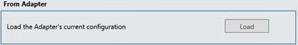
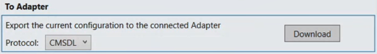

Setting CS6 Guarto Configuration Through Online Engineering
Once the adapter is connected to the CS6 Guarto intrusion panel, you can override online data with new configuration data. For background information, see CS6 Guarto Integration.
- After installation, the application Siemens.GMS.CS6.Configurator is available in AdditionalSW\CEI CMSDL CS6 Configurator locally or over the network.
- The CS6 adapter is running and connected to the CS6 intrusion panels. For instructions, see Installing and Starting the CS6 Guarto Adapter.
- The NK82xx configuration INI file is available.
- Start the configurator tool.
- Double-click the application Siemens.GMS.CS6.Configurator.
- The Siemens.GMS.CS6.Configurator tool page is displayed.
- Load NK82xx configuration.
- For instructions, see Loading NK82xx Configuration.
- Connect the configurator tool to the adapter.
- For instructions, see Connecting the Configurator Tool to the Adapter.
- Load the current online data, in the From Adapter section, click Load.

NOTE: If the CS6 configuration does not exist yet, load the CS6 configuration from file. For instructions, see Loading CS6 Configuration. - (Optional) If any adjustments are required, do one or more of the following:
- Override online data. In the To Adapter section, from the Protocol drop-down list, select one of the following settings:
- CMSDL
- CEI
- Click Download.
- The online data is overridden with the current configuration.

- Disconnect the configurator tool from the adapter.
- In the Siemens.GMS.CS6.Configurator tool page, click Go offline.
- The CS6 configurator tool is disconnected from the adapter.